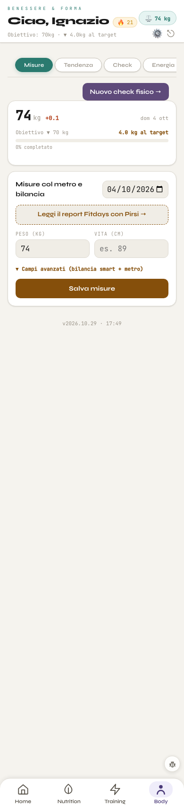

A sinistra il tab Misure vero con la veste A accesa, fotografato dal banco a 390 px: la barra in basso c'è già, il resto è com'era. A destra lo schizzo con le regole di Home, Seduta e Nutrition. Stessi dati, stessi tasti, stessi passaggi; nessuna logica nuova. Tendenza, Check ed Energia prendono la stessa testata e le stesse regole. I numeri gialli sono cose da snellire nel giro 2, segnate ma non fatte.
Cosa cambia e perché
La testata della zona Body (#6A55A0, scritte bianche, 6,14:1) prende il posto di «Benessere & Forma · Ciao, Ignazio», come in Seduta e Nutrition. Dentro ci sono i tasti di quella intestazione (fuoco, peso, Impostazioni, Esci), la data, il titolo a 24 px e le quattro schede Misure · Tendenza · Check · Energia.
«Nuovo check fisico» diventa il tasto principale largo, nel viola della zona, subito sotto la testata, in tutte e quattro le schede, come oggi.
Titoli di sezione fuori dai riquadri: «Il peso» e «Misure col metro e bilancia».
Il peso in un gruppo: il numero grande con la variazione, poi l'obiettivo (con «0% completato») e quanto manca, a righe con il valore a destra.
Le misure come un modulo a righe: il giorno, il report Fitdays come riga con la freccia, peso e vita a 16 px, «Campi avanzati» e «Salva misure» a tutta larghezza.
Prima · veste A accesa

Dopo · schizzo
Dom 4 ott
🔥 21⚖ 74 kg⚙⎋1
Body
MisureTendenzaCheckEnergia
Il peso dom 4 ott2
74kg+0,1
Obiettivo0% completato▼ 70 kg
Al target4,0 kg
Misure col metro e bilancia3
Giorno04/10/2026
Leggi il report Fitdays con Pirsi›
74
es. 89
Campi avanzatibilancia smart + metro▾
Home
Nutrition
Training
Body
Da snellire nel giro 2
L'intestazione con fuoco, peso, Impostazioni ed Esci si ripete in ogni pagina: forse basta in Home.
Il peso è scritto tre volte: nella testata (⚖ 74 kg), nel numero grande e nel campo «Peso». L'obiettivo compare anche nell'intestazione di oggi.
Due tasti larghi nella stessa pagina («Nuovo check fisico» e «Salva misure»): nel giro 2 si decide quale resta in vista e quale va dentro il modulo.
Quando si costruisce
Tutto dietro html.v5, come Home, Seduta e Nutrition: a veste spenta il tab resta identico al pixel. Il colore c'è già (--z-body). La testata e i titoli di sezione vanno nell'HTML di body.js solo a veste accesa, con tastiTestaV5 per i tasti dell'intestazione; il resto con lo stile. Le scritture delle misure non si toccano.